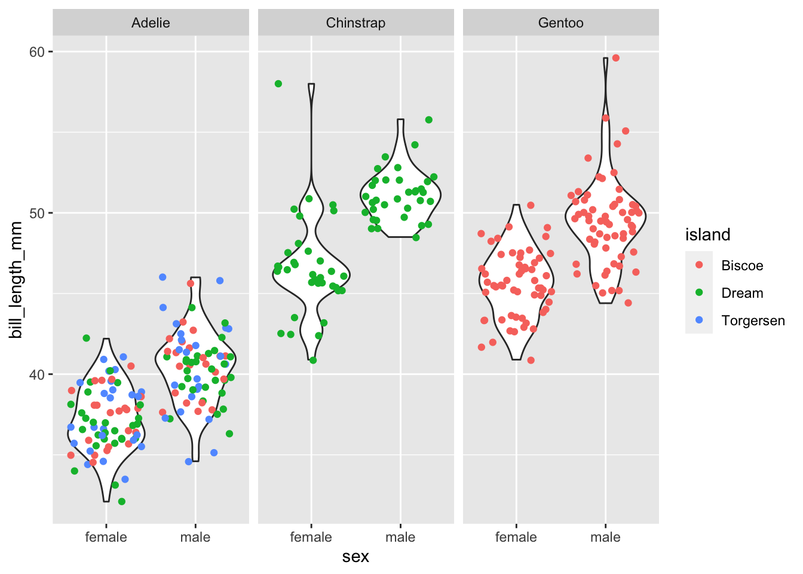
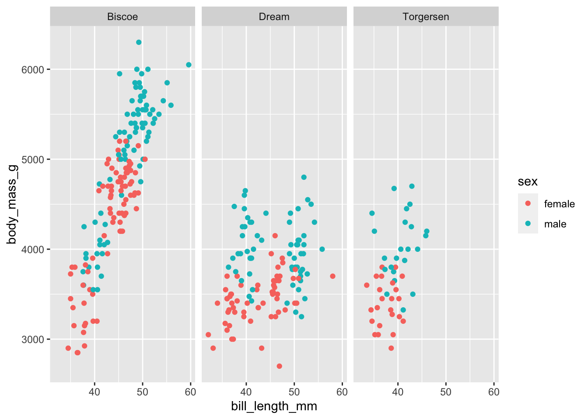
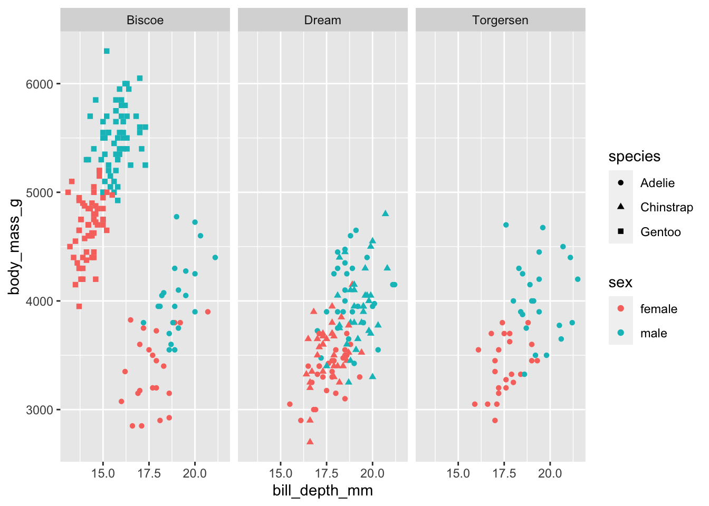
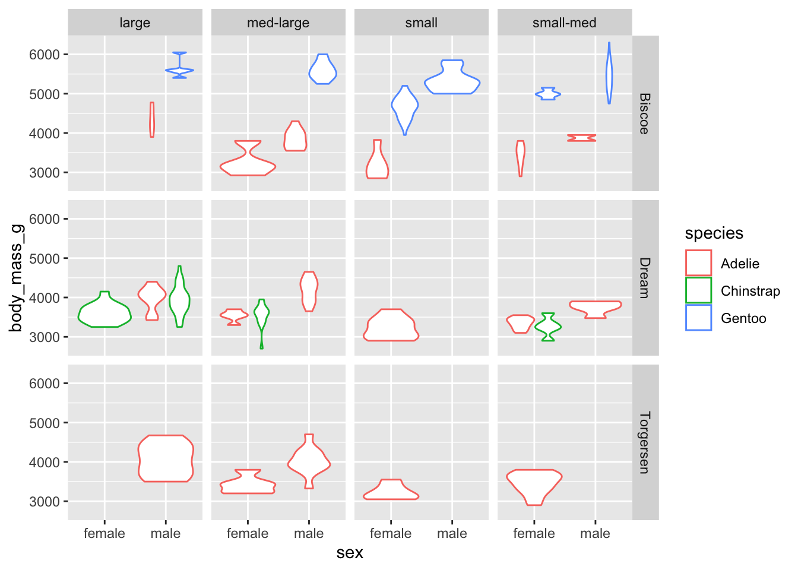
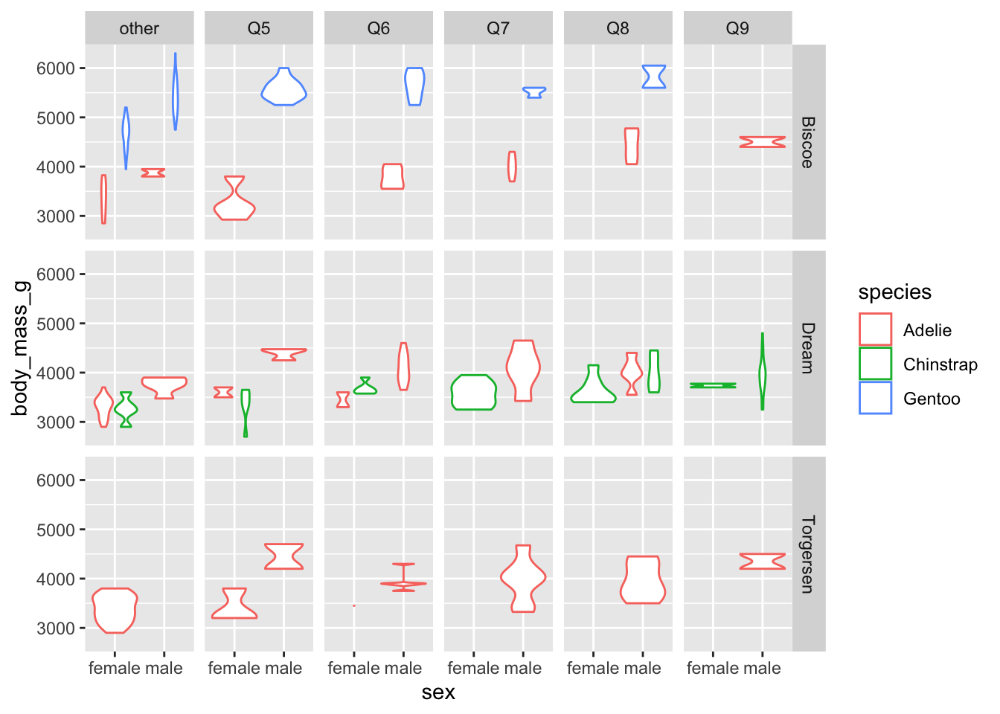
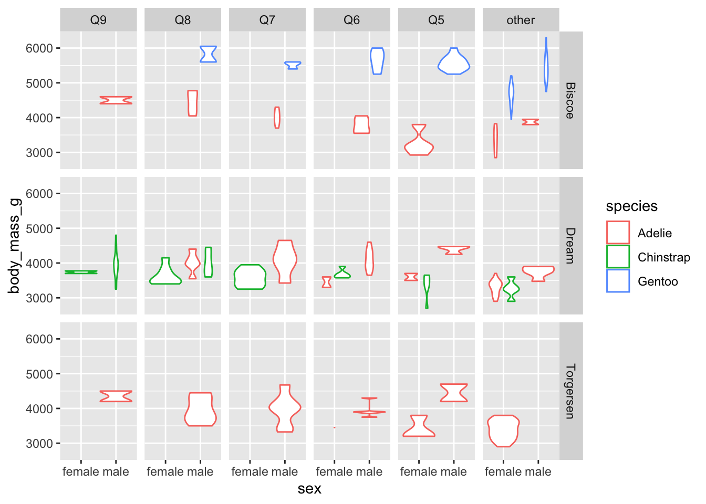
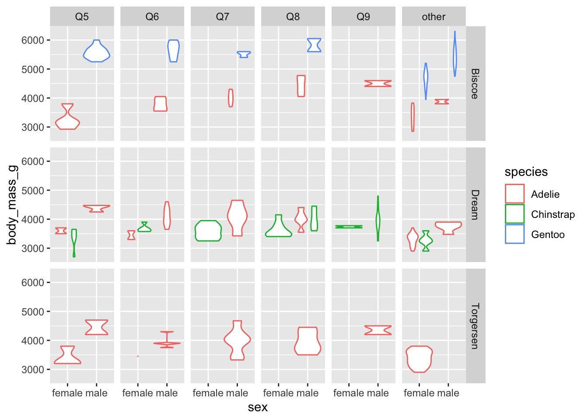
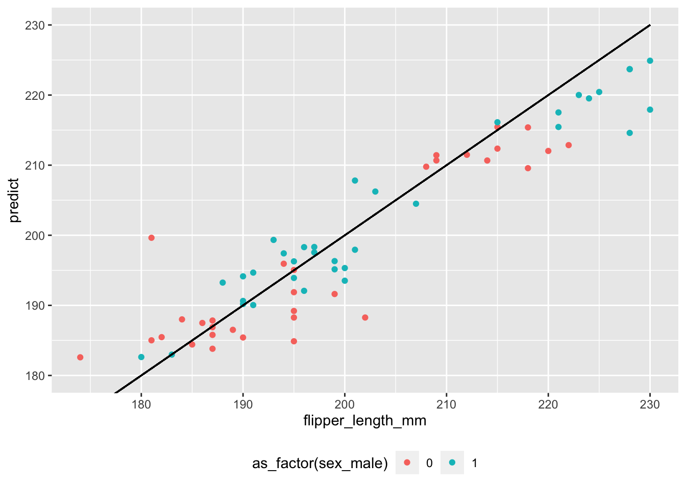
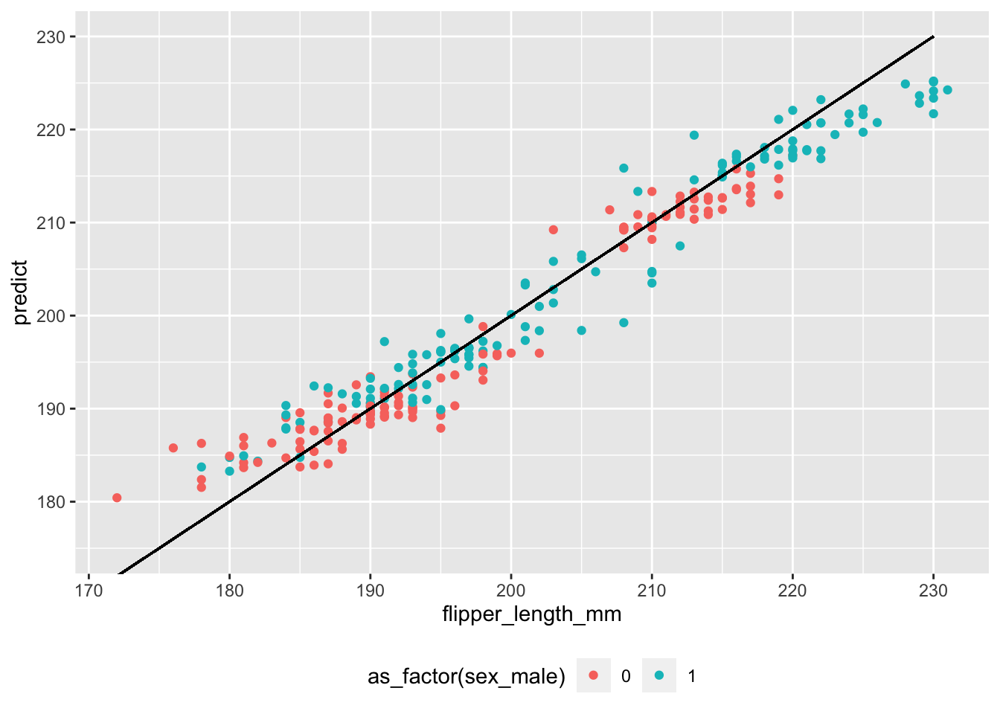

Lecture 8 - factors and recipes
Robert Settlage
2022-10-26
Last updated: 2022-12-03
Checks: 7 0
Knit directory: STAT5014_Fall2022_website/
This reproducible R Markdown analysis was created with workflowr (version 1.7.0). The Checks tab describes the reproducibility checks that were applied when the results were created. The Past versions tab lists the development history.
Great! Since the R Markdown file has been committed to the Git repository, you know the exact version of the code that produced these results.
Great job! The global environment was empty. Objects defined in the global environment can affect the analysis in your R Markdown file in unknown ways. For reproduciblity it’s best to always run the code in an empty environment.
The command set.seed(20210816) was run prior to running
the code in the R Markdown file. Setting a seed ensures that any results
that rely on randomness, e.g. subsampling or permutations, are
reproducible.
Great job! Recording the operating system, R version, and package versions is critical for reproducibility.
Nice! There were no cached chunks for this analysis, so you can be confident that you successfully produced the results during this run.
Great job! Using relative paths to the files within your workflowr project makes it easier to run your code on other machines.
Great! You are using Git for version control. Tracking code development and connecting the code version to the results is critical for reproducibility.
The results in this page were generated with repository version 57b549a. See the Past versions tab to see a history of the changes made to the R Markdown and HTML files.
Note that you need to be careful to ensure that all relevant files for
the analysis have been committed to Git prior to generating the results
(you can use wflow_publish or
wflow_git_commit). workflowr only checks the R Markdown
file, but you know if there are other scripts or data files that it
depends on. Below is the status of the Git repository when the results
were generated:
Ignored files:
Ignored: .DS_Store
Ignored: .Rhistory
Ignored: .Rproj.user/
Ignored: analysis/.Rhistory
Ignored: analysis/Week_2_Reproducible_research_Git_Good_Programming_Practices_cache/
Ignored: analysis/figure/
Ignored: analysis/girder_raw.RDS
Ignored: analysis/sensory_raw.RDS
Ignored: girder_raw.RDS
Ignored: sensory_raw.RDS
Untracked files:
Untracked: STAT5014_Fall2022_website.Rproj
Untracked: Syllabus.pdf
Untracked: code/
Untracked: data/
Untracked: figure/matplotlib_test.jpg
Untracked: output/
Untracked: staging/
Untracked: testing.Rmd
Untracked: testing.html
Unstaged changes:
Modified: analysis/Week_4_Plots_using_ggplot2_plotly_more.Rmd
Modified: figure/seaborn_pairplot.jpg
Note that any generated files, e.g. HTML, png, CSS, etc., are not included in this status report because it is ok for generated content to have uncommitted changes.
These are the previous versions of the repository in which changes were
made to the R Markdown
(analysis/Week_8_forcats_recipes.Rmd) and HTML
(docs/Week_8_forcats_recipes.html) files. If you’ve
configured a remote Git repository (see ?wflow_git_remote),
click on the hyperlinks in the table below to view the files as they
were in that past version.
| File | Version | Author | Date | Message |
|---|---|---|---|---|
| Rmd | bbd5d9d | Robert Settlage | 2022-11-02 | week 9 |
| html | bbd5d9d | Robert Settlage | 2022-11-02 | week 9 |
| Rmd | 54b4110 | Robert Settlage | 2022-10-26 | adding week 8 |
| html | 54b4110 | Robert Settlage | 2022-10-26 | adding week 8 |
Last time:
- Importing data
(my)sql, excel, json, plain text, yaml, web scraping
As usual, there’s a library for that …
The functions I typically use are:
plain text, csv, tab, etc - fread (data.table)
rectangular – read_delim (readr)
excel - read_excel (readxl)
json - fromJSON (rjson)
yaml - read_yaml (yaml)
sql - bit more complicated, but ….
https://datacarpentry.org/R-ecology-lesson/05-r-and-databases.html
Plain text
These can be in many formats that may include single delimiters (eg csv, tsv, etc), multiple delimiters, a fixed with, garbled with a missing field/delimiter, or have incompatible line endings (Mac vs Windows).
Why don’t I prefer read.csv/delim?
- fread starts with a good guess at what my seperator is going to be
“[,;:]”
- read_delim/fread are very fast, they sample the file and then set
the column types
- fread allows me to add a bash command that is run inline with the
reading
- readr functions capture the errors and attach them to the returned
object as problems
- readr gives me a summary of what it found
- fread/readr allows me to read directly from compressed files
- fread/readr allow me to read from a remote file
- both have a lot of other useful options: skip, comment, trim_ws, select, sep2, fill
Examples:
library(dplyr)
library(readr)
library(data.table)
# remote file
read_csv("https://github.com/tidyverse/readr/raw/main/inst/extdata/mtcars.csv")
# use inline bash commands
# could do this operation with the select argument, but the idea translates into better stuff
readr_example("mtcars.csv")
fread("awk -F',' '{print $1, $4}' /Users/rsettlag/R/readr/extdata/mtcars.csv")
# problems example:
y <- "x\n1\n2\nb" %>% read_csv(col_types = list(col_double()))
problems(y)python:
import pandas as pd
df = pd.read_csv(r'/Users/rsettlag/R/readr/extdata/mtcars.csv')
print(df)Today’s Agenda
- Categorical data
- Recipes
Categorical data
Categorical data is best described as grouped data. This data has no intrinsic place and order (or scale) on the number line. Inclusive in this is nominal (no order) and ordinal (no scale) data. For example:
- yes/no
- eye color
- country
- satisfaction rating from 1-5 (least to most)
- income as high/med/low
Converting continuous data into categorical
Sometimes, it is advantageous to lump continuous data into groups. For instance, you may have a date variable but are only interested in year, or weight and only interested in a high/med/low summary.
Let’s play with the penguin data and see what we see:
penguins %>%
glimpse()Rows: 344
Columns: 8
$ species <fct> Adelie, Adelie, Adelie, Adelie, Adelie, Adelie, Adel…
$ island <fct> Torgersen, Torgersen, Torgersen, Torgersen, Torgerse…
$ bill_length_mm <dbl> 39.1, 39.5, 40.3, NA, 36.7, 39.3, 38.9, 39.2, 34.1, …
$ bill_depth_mm <dbl> 18.7, 17.4, 18.0, NA, 19.3, 20.6, 17.8, 19.6, 18.1, …
$ flipper_length_mm <int> 181, 186, 195, NA, 193, 190, 181, 195, 193, 190, 186…
$ body_mass_g <int> 3750, 3800, 3250, NA, 3450, 3650, 3625, 4675, 3475, …
$ sex <fct> male, female, female, NA, female, male, female, male…
$ year <int> 2007, 2007, 2007, 2007, 2007, 2007, 2007, 2007, 2007…penguins %>%
filter(complete.cases(.)) %>%
ggplot(aes(x=sex, y=bill_length_mm)) +
geom_violin() +
geom_jitter(aes(color=island)) +
facet_wrap(~species)
penguins %>%
filter(complete.cases(.)) %>%
ggplot(aes(x=bill_length_mm, y=body_mass_g)) +
geom_point(aes(color=sex)) +
facet_grid(~island)
penguins %>%
filter(complete.cases(.)) %>%
ggplot(aes(x=bill_depth_mm, y=body_mass_g)) +
geom_point(aes(color=sex, shape=species)) +
facet_grid(~island)
penguins %>%
filter(complete.cases(.)) %>%
mutate(bill_volume = bill_length_mm * bill_depth_mm^2) %>%
ggplot(aes(x=bill_volume, y=body_mass_g)) +
geom_point(aes(color=sex, shape=species)) +
facet_grid(~island)
penguins_new <- penguins %>%
filter(complete.cases(.)) %>%
mutate(bill_volume = bill_length_mm * bill_depth_mm^2) %>%
mutate(bill_volume_quartile = case_when(
bill_volume < quantile(bill_volume, prob=c(0.25, 0.5, 0.75))[1] ~ "small",
bill_volume < quantile(bill_volume, prob=c(0.25, 0.5, 0.75))[2] ~ "small-med",
bill_volume < quantile(bill_volume, prob=c(0.25, 0.5, 0.75))[3] ~ "med-large",
TRUE ~ "large"
))
penguins_new %>%
ggplot(aes(x=sex, y=body_mass_g)) +
geom_violin(aes(color=species)) +
facet_grid(cols=vars(bill_volume_quartile), rows=vars(island))Warning: Groups with fewer than two data points have been dropped.
skim(penguins_new)| Name | penguins_new |
| Number of rows | 333 |
| Number of columns | 10 |
| _______________________ | |
| Column type frequency: | |
| character | 1 |
| factor | 3 |
| numeric | 6 |
| ________________________ | |
| Group variables | None |
Variable type: character
| skim_variable | n_missing | complete_rate | min | max | empty | n_unique | whitespace |
|---|---|---|---|---|---|---|---|
| bill_volume_quartile | 0 | 1 | 5 | 9 | 0 | 4 | 0 |
Variable type: factor
| skim_variable | n_missing | complete_rate | ordered | n_unique | top_counts |
|---|---|---|---|---|---|
| species | 0 | 1 | FALSE | 3 | Ade: 146, Gen: 119, Chi: 68 |
| island | 0 | 1 | FALSE | 3 | Bis: 163, Dre: 123, Tor: 47 |
| sex | 0 | 1 | FALSE | 2 | mal: 168, fem: 165 |
Variable type: numeric
| skim_variable | n_missing | complete_rate | mean | sd | p0 | p25 | p50 | p75 | p100 | hist |
|---|---|---|---|---|---|---|---|---|---|---|
| bill_length_mm | 0 | 1 | 43.99 | 5.47 | 32.10 | 39.50 | 44.50 | 48.60 | 59.60 | ▃▇▇▆▁ |
| bill_depth_mm | 0 | 1 | 17.16 | 1.97 | 13.10 | 15.60 | 17.30 | 18.70 | 21.50 | ▅▆▇▇▂ |
| flipper_length_mm | 0 | 1 | 200.97 | 14.02 | 172.00 | 190.00 | 197.00 | 213.00 | 231.00 | ▂▇▃▅▃ |
| body_mass_g | 0 | 1 | 4207.06 | 805.22 | 2700.00 | 3550.00 | 4050.00 | 4775.00 | 6300.00 | ▃▇▅▃▂ |
| year | 0 | 1 | 2008.04 | 0.81 | 2007.00 | 2007.00 | 2008.00 | 2009.00 | 2009.00 | ▇▁▇▁▇ |
| bill_volume | 0 | 1 | 13050.53 | 3149.32 | 7362.07 | 10754.86 | 12701.29 | 14764.74 | 23449.09 | ▅▇▅▂▁ |
penguins_new <- penguins_new %>%
mutate(bill_volume_buckets = case_when(
bill_volume > quantile(bill_volume, prob=c(0.9, 0.8, 0.7, 0.6, 0.5, 0.4))[1] ~ "Q9",
bill_volume > quantile(bill_volume, prob=c(0.9, 0.8, 0.7, 0.6, 0.5, 0.4))[2] ~ "Q8",
bill_volume > quantile(bill_volume, prob=c(0.9, 0.8, 0.7, 0.6, 0.5, 0.4))[3] ~ "Q7",
bill_volume > quantile(bill_volume, prob=c(0.9, 0.8, 0.7, 0.6, 0.5, 0.4))[4] ~ "Q6",
bill_volume > quantile(bill_volume, prob=c(0.9, 0.8, 0.7, 0.6, 0.5, 0.4))[5] ~ "Q5",
TRUE ~ "other"
))
penguins_new %>%
ggplot(aes(x=sex, y=body_mass_g)) +
geom_violin(aes(color=species)) +
facet_grid(cols=vars(bill_volume_buckets), rows=vars(island))Warning: Groups with fewer than two data points have been dropped.
Groups with fewer than two data points have been dropped.
Groups with fewer than two data points have been dropped.
Groups with fewer than two data points have been dropped.
Groups with fewer than two data points have been dropped.
factors
What ggplot is doing under the hood for the text based variables is
using as.factor to convert from text to a factor. We can test and change
that. A handy alternative to as.factor is
as_factor tidyverse alternative from
forcats.
# check out the factor assignments and levels
as.factor(penguins_new$bill_volume_buckets) [1] Q6 other Q5 Q6 Q8 other Q7 Q5 Q8 Q8 other Q6
[13] Q9 other Q9 other Q5 Q5 other other other Q6 Q5 Q5
[25] Q7 other other other Q7 other Q8 Q8 Q7 Q6 Q7 other
[37] Q6 other Q8 other Q6 Q7 other Q9 other Q7 other Q8
[49] other Q7 other Q7 other Q6 other Q9 other Q6 other Q6
[61] other Q7 other Q8 other Q6 other Q8 other Q7 other Q6
[73] other Q7 other Q5 Q5 Q5 other Q8 Q6 Q5 Q6 Q6
[85] other Q6 other Q5 other Q7 Q5 Q6 other Q7 other Q8
[97] other Q7 Q5 Q6 other Q7 other Q8 other Q9 other Q8
[109] Q8 Q7 other Q8 other Q7 other Q7 other Q6 other Q7
[121] other Q6 other Q7 other Q8 other Q5 other other other Q8
[133] other Q5 other other other other other Q6 Q6 other other other
[145] other Q6 other Q5 other other other other other other other other
[157] other other other other other other other other other other other other
[169] other other other other other other other other other other Q8 other
[181] Q5 other Q5 other other other other other other Q5 other other
[193] Q5 other other other other other other other other other other other
[205] other other other other Q5 other Q6 Q5 other other other other
[217] other other other other other Q6 other other other Q5 other other
[229] other Q7 other other other Q7 other Q7 other Q5 other other
[241] other other other Q6 other Q8 other other other other Q5 other
[253] other other other other Q6 other Q6 Q5 other other other other
[265] Q5 Q7 Q9 Q9 Q8 Q9 Q7 Q7 Q8 Q8 Q9 Q7
[277] Q9 Q6 Q8 Q6 Q9 Q9 Q9 Q8 Q8 other Q7 other
[289] Q9 Q7 Q9 Q8 Q9 Q7 Q9 other Q9 other Q9 Q8
[301] Q6 Q8 Q9 Q5 Q9 Q9 Q6 Q9 Q5 Q8 Q8 Q8
[313] Q9 Q9 Q7 Q5 Q9 Q6 Q9 Q5 Q9 other Q9 Q9
[325] Q8 Q9 Q5 Q5 Q9 Q7 Q8 Q9 Q9
Levels: other Q5 Q6 Q7 Q8 Q9levels(as.factor(penguins_new$bill_volume_buckets))[1] "other" "Q5" "Q6" "Q7" "Q8" "Q9" as.numeric(as.factor(penguins_new$bill_volume_buckets)) [1] 3 1 2 3 5 1 4 2 5 5 1 3 6 1 6 1 2 2 1 1 1 3 2 2 4 1 1 1 4 1 5 5 4 3 4 1 3
[38] 1 5 1 3 4 1 6 1 4 1 5 1 4 1 4 1 3 1 6 1 3 1 3 1 4 1 5 1 3 1 5 1 4 1 3 1 4
[75] 1 2 2 2 1 5 3 2 3 3 1 3 1 2 1 4 2 3 1 4 1 5 1 4 2 3 1 4 1 5 1 6 1 5 5 4 1
[112] 5 1 4 1 4 1 3 1 4 1 3 1 4 1 5 1 2 1 1 1 5 1 2 1 1 1 1 1 3 3 1 1 1 1 3 1 2
[149] 1 1 1 1 1 1 1 1 1 1 1 1 1 1 1 1 1 1 1 1 1 1 1 1 1 1 1 1 1 1 5 1 2 1 2 1 1
[186] 1 1 1 1 2 1 1 2 1 1 1 1 1 1 1 1 1 1 1 1 1 1 1 2 1 3 2 1 1 1 1 1 1 1 1 1 3
[223] 1 1 1 2 1 1 1 4 1 1 1 4 1 4 1 2 1 1 1 1 1 3 1 5 1 1 1 1 2 1 1 1 1 1 3 1 3
[260] 2 1 1 1 1 2 4 6 6 5 6 4 4 5 5 6 4 6 3 5 3 6 6 6 5 5 1 4 1 6 4 6 5 6 4 6 1
[297] 6 1 6 5 3 5 6 2 6 6 3 6 2 5 5 5 6 6 4 2 6 3 6 2 6 1 6 6 5 6 2 2 6 4 5 6 6# we can arrange by the variable, does it change the factor order?
penguins_new <- penguins_new %>%
arrange(desc(bill_volume_buckets))
as.factor(penguins_new$bill_volume_buckets) [1] Q9 Q9 Q9 Q9 Q9 Q9 Q9 Q9 Q9 Q9 Q9 Q9
[13] Q9 Q9 Q9 Q9 Q9 Q9 Q9 Q9 Q9 Q9 Q9 Q9
[25] Q9 Q9 Q9 Q9 Q9 Q9 Q9 Q9 Q9 Q9 Q8 Q8
[37] Q8 Q8 Q8 Q8 Q8 Q8 Q8 Q8 Q8 Q8 Q8 Q8
[49] Q8 Q8 Q8 Q8 Q8 Q8 Q8 Q8 Q8 Q8 Q8 Q8
[61] Q8 Q8 Q8 Q8 Q8 Q8 Q8 Q7 Q7 Q7 Q7 Q7
[73] Q7 Q7 Q7 Q7 Q7 Q7 Q7 Q7 Q7 Q7 Q7 Q7
[85] Q7 Q7 Q7 Q7 Q7 Q7 Q7 Q7 Q7 Q7 Q7 Q7
[97] Q7 Q7 Q7 Q7 Q6 Q6 Q6 Q6 Q6 Q6 Q6 Q6
[109] Q6 Q6 Q6 Q6 Q6 Q6 Q6 Q6 Q6 Q6 Q6 Q6
[121] Q6 Q6 Q6 Q6 Q6 Q6 Q6 Q6 Q6 Q6 Q6 Q6
[133] Q6 Q5 Q5 Q5 Q5 Q5 Q5 Q5 Q5 Q5 Q5 Q5
[145] Q5 Q5 Q5 Q5 Q5 Q5 Q5 Q5 Q5 Q5 Q5 Q5
[157] Q5 Q5 Q5 Q5 Q5 Q5 Q5 Q5 Q5 Q5 other other
[169] other other other other other other other other other other other other
[181] other other other other other other other other other other other other
[193] other other other other other other other other other other other other
[205] other other other other other other other other other other other other
[217] other other other other other other other other other other other other
[229] other other other other other other other other other other other other
[241] other other other other other other other other other other other other
[253] other other other other other other other other other other other other
[265] other other other other other other other other other other other other
[277] other other other other other other other other other other other other
[289] other other other other other other other other other other other other
[301] other other other other other other other other other other other other
[313] other other other other other other other other other other other other
[325] other other other other other other other other other
Levels: other Q5 Q6 Q7 Q8 Q9penguins_new %>%
ggplot(aes(x=sex, y=body_mass_g)) +
geom_violin(aes(color=species)) +
facet_grid(cols=vars(bill_volume_buckets), rows=vars(island))Warning: Groups with fewer than two data points have been dropped.
Groups with fewer than two data points have been dropped.
Groups with fewer than two data points have been dropped.
Groups with fewer than two data points have been dropped.
Groups with fewer than two data points have been dropped.
# what does as_factor do differently?
penguins_new <- penguins_new %>%
mutate(bill_volume_buckets_fct = bill_volume_buckets %>% as_factor())
penguins_new %>%
ggplot(aes(x=sex, y=body_mass_g)) +
geom_violin(aes(color=species)) +
facet_grid(cols=vars(bill_volume_buckets_fct), rows=vars(island))Warning: Groups with fewer than two data points have been dropped.
Groups with fewer than two data points have been dropped.
Groups with fewer than two data points have been dropped.
Groups with fewer than two data points have been dropped.
Groups with fewer than two data points have been dropped.
# to reverse the factor levels, use fct_rev
penguins_new <- penguins_new %>%
mutate(bill_volume_buckets_fct2 = bill_volume_buckets_fct %>% as_factor() %>% fct_rev())
# what if we want to re-order with a non sortable order?
penguins_new <- penguins_new %>%
mutate(bill_volume_buckets_fct3 = bill_volume_buckets_fct2 %>% as_factor() %>% fct_relevel("other", after=Inf))
penguins_new %>%
ggplot(aes(x=sex, y=body_mass_g)) +
geom_violin(aes(color=species)) +
facet_grid(cols=vars(bill_volume_buckets_fct3), rows=vars(island))Warning: Groups with fewer than two data points have been dropped.
Groups with fewer than two data points have been dropped.
Groups with fewer than two data points have been dropped.
Groups with fewer than two data points have been dropped.
Groups with fewer than two data points have been dropped.
What about for a model?
What you need for a model is a “one-hot” encoded variable. It creates
a new column for each unique value of the categorical variable. Each of
these columns are binary with values 1 or 0 depending on whether the
value of the variable is equal to the unique value being encoded by this
column. The R function lm (through model.matrix) does this
for us.
# in this, what is does the intercept represent?
model.matrix(bill_length_mm~sex+bill_volume, penguins_new) (Intercept) sexmale bill_volume
1 1 1 18210.825
2 1 1 21263.500
3 1 1 19011.312
4 1 1 18387.173
5 1 1 18791.304
6 1 1 19012.500
7 1 1 18911.232
8 1 1 20660.508
9 1 1 20315.313
10 1 1 21305.053
11 1 1 19400.080
12 1 1 20120.000
13 1 0 18376.720
14 1 1 19043.816
15 1 1 18772.000
16 1 1 17869.500
17 1 1 21120.000
18 1 1 23449.088
19 1 1 18025.440
20 1 1 22281.480
21 1 1 21186.535
22 1 1 18632.250
23 1 1 18568.829
24 1 1 18823.840
25 1 1 18009.035
26 1 1 18555.400
27 1 1 19676.163
28 1 1 18449.568
29 1 1 19523.293
30 1 1 17742.688
31 1 1 19734.975
32 1 1 21875.832
33 1 1 18338.800
34 1 0 17554.438
35 1 1 16677.348
36 1 1 17348.384
37 1 1 15404.266
38 1 1 17452.232
39 1 1 15520.000
40 1 1 17114.769
41 1 1 15970.500
42 1 1 15731.848
43 1 1 16360.218
44 1 1 17019.317
45 1 1 16400.000
46 1 1 15595.200
47 1 1 16046.550
48 1 0 16968.204
49 1 1 15675.325
50 1 1 15888.384
51 1 1 16241.202
52 1 1 17224.400
53 1 1 16155.100
54 1 0 15875.926
55 1 1 16992.612
56 1 0 16431.660
57 1 1 17035.720
58 1 0 16052.544
59 1 1 16297.008
60 1 0 17097.280
61 1 1 17194.212
62 1 0 15940.764
63 1 0 16308.869
64 1 1 17386.300
65 1 0 16052.541
66 1 0 17162.016
67 1 1 16429.504
68 1 1 15059.072
69 1 1 14467.005
70 1 1 14609.889
71 1 0 14442.950
72 1 1 14519.438
73 1 1 14837.100
74 1 1 14324.121
75 1 1 14322.744
76 1 1 14349.664
77 1 1 14993.691
78 1 1 14648.300
79 1 1 15358.501
80 1 1 14574.168
81 1 1 14785.200
82 1 1 15120.000
83 1 1 15280.000
84 1 1 14299.803
85 1 1 14218.956
86 1 1 14779.908
87 1 1 14656.600
88 1 1 14288.400
89 1 1 15203.932
90 1 1 15056.900
91 1 1 15263.802
92 1 0 14899.065
93 1 0 14321.168
94 1 0 15270.164
95 1 0 14764.744
96 1 1 14853.125
97 1 0 14963.147
98 1 0 14701.376
99 1 0 14904.642
100 1 0 14251.035
101 1 1 13672.879
102 1 0 13670.383
103 1 0 13970.700
104 1 1 14045.976
105 1 0 14005.624
106 1 1 13813.248
107 1 1 13996.224
108 1 1 13716.856
109 1 1 13613.964
110 1 1 13478.400
111 1 1 13440.832
112 1 1 14000.592
113 1 1 13803.075
114 1 1 14118.912
115 1 0 13748.816
116 1 1 13464.771
117 1 1 13792.675
118 1 1 14181.237
119 1 1 14169.150
120 1 1 13897.935
121 1 1 13637.910
122 1 1 13561.632
123 1 1 14203.375
124 1 1 14055.552
125 1 1 13576.759
126 1 1 13911.975
127 1 1 13683.035
128 1 1 14105.600
129 1 0 14066.630
130 1 0 13421.619
131 1 0 13406.400
132 1 0 14148.750
133 1 0 13677.553
134 1 0 13057.200
135 1 0 12731.136
136 1 1 13183.313
137 1 0 13234.176
138 1 0 12976.605
139 1 0 13111.884
140 1 1 13288.704
141 1 0 12971.248
142 1 1 13210.236
143 1 0 12765.924
144 1 1 12973.356
145 1 0 13181.076
146 1 0 13111.884
147 1 1 12834.375
148 1 1 12720.277
149 1 1 13284.500
150 1 1 12859.396
151 1 1 13288.476
152 1 1 12766.905
153 1 1 12766.905
154 1 1 13384.407
155 1 1 12990.780
156 1 1 12776.400
157 1 1 12830.895
158 1 1 13330.776
159 1 1 12807.072
160 1 1 12934.579
161 1 0 12923.764
162 1 0 13149.500
163 1 0 12936.976
164 1 0 12719.825
165 1 0 12741.300
166 1 0 13207.300
167 1 0 11959.020
168 1 0 12325.076
169 1 0 11596.344
170 1 0 11646.464
171 1 0 12658.842
172 1 1 12514.702
173 1 1 11478.592
174 1 0 12609.513
175 1 0 11016.155
176 1 1 12187.092
177 1 0 12515.180
178 1 0 10519.600
179 1 0 11826.000
180 1 0 12321.000
181 1 0 10567.570
182 1 0 11534.760
183 1 0 12406.284
184 1 0 11214.350
185 1 0 11302.545
186 1 0 11943.750
187 1 0 10057.940
188 1 0 10196.277
189 1 0 10866.400
190 1 0 10643.724
191 1 0 9316.620
192 1 0 9892.604
193 1 0 12093.500
194 1 0 11715.264
195 1 0 10871.875
196 1 0 11543.616
197 1 0 9383.402
198 1 0 10236.064
199 1 0 11818.132
200 1 0 11566.800
201 1 0 9941.940
202 1 0 10834.298
203 1 0 8579.851
204 1 0 11214.350
205 1 0 9651.200
206 1 0 11419.424
207 1 0 11010.900
208 1 0 10372.725
209 1 0 12437.613
210 1 0 11155.400
211 1 0 10317.300
212 1 0 10709.408
213 1 0 11617.800
214 1 0 8898.912
215 1 0 12018.688
216 1 0 11403.990
217 1 0 12335.785
218 1 0 12594.800
219 1 0 11801.856
220 1 1 12586.875
221 1 0 10902.500
222 1 0 10073.250
223 1 0 11754.882
224 1 1 12011.104
225 1 0 7712.025
226 1 1 11762.300
227 1 0 10527.552
228 1 0 12391.296
229 1 0 11406.240
230 1 1 12383.658
231 1 0 10526.760
232 1 0 8032.464
233 1 0 9682.047
234 1 1 11552.000
235 1 1 10007.900
236 1 0 8474.625
237 1 0 9677.464
238 1 1 10932.003
239 1 0 7774.948
240 1 1 11099.088
241 1 0 7676.521
242 1 1 12701.290
243 1 0 8539.895
244 1 1 10316.944
245 1 0 9762.728
246 1 1 12151.957
247 1 0 7654.500
248 1 1 11367.168
249 1 0 9713.550
250 1 1 11104.087
251 1 1 10265.398
252 1 0 9482.275
253 1 0 9776.625
254 1 1 11558.332
255 1 0 7362.069
256 1 1 10511.261
257 1 1 10755.000
258 1 0 9856.418
259 1 1 11704.500
260 1 1 11072.457
261 1 0 8630.192
262 1 0 9482.275
263 1 0 10754.864
264 1 0 7995.594
265 1 0 8138.240
266 1 1 12004.063
267 1 0 8014.363
268 1 1 12697.600
269 1 0 8502.357
270 1 1 11160.000
271 1 0 8423.956
272 1 0 8791.055
273 1 0 7942.361
274 1 1 11283.728
275 1 0 9396.424
276 1 1 9642.285
277 1 0 9351.936
278 1 1 11272.500
279 1 0 9642.240
280 1 1 10672.200
281 1 0 8462.598
282 1 1 10237.500
283 1 0 9082.800
284 1 1 11798.136
285 1 0 8626.932
286 1 1 10256.862
287 1 0 8829.697
288 1 0 9235.112
289 1 0 8771.340
290 1 1 11407.500
291 1 0 10732.500
292 1 1 11291.904
293 1 1 11729.952
294 1 0 10185.360
295 1 0 10440.000
296 1 1 12441.600
297 1 0 9577.900
298 1 0 8607.888
299 1 1 12156.992
300 1 0 10323.275
301 1 0 10103.784
302 1 1 12640.500
303 1 0 8550.756
304 1 0 8999.424
305 1 1 10344.132
306 1 0 9310.000
307 1 0 10687.500
308 1 0 9566.375
309 1 0 9616.005
310 1 1 12521.692
311 1 1 12332.216
312 1 0 9997.204
313 1 0 10036.224
314 1 0 10912.500
315 1 0 11339.800
316 1 1 11047.500
317 1 1 12131.028
318 1 0 9010.953
319 1 0 8486.800
320 1 1 10967.281
321 1 0 11667.520
322 1 1 12589.938
323 1 0 10050.240
324 1 0 9185.022
325 1 0 8858.968
326 1 0 9570.132
327 1 1 12423.096
328 1 0 9900.608
329 1 0 12689.896
330 1 0 11904.192
331 1 0 11270.404
332 1 0 11852.825
333 1 0 12455.312
attr(,"assign")
[1] 0 1 2
attr(,"contrasts")
attr(,"contrasts")$sex
[1] "contr.treatment"# if we just wanted the sex and species encodings
model.matrix(~sex+species+0, penguins_new) sexfemale sexmale speciesChinstrap speciesGentoo
1 0 1 0 0
2 0 1 0 0
3 0 1 0 0
4 0 1 0 0
5 0 1 0 0
6 0 1 1 0
7 0 1 1 0
8 0 1 1 0
9 0 1 1 0
10 0 1 1 0
11 0 1 1 0
12 0 1 1 0
13 1 0 1 0
14 0 1 1 0
15 0 1 1 0
16 0 1 1 0
17 0 1 1 0
18 0 1 1 0
19 0 1 1 0
20 0 1 1 0
21 0 1 1 0
22 0 1 1 0
23 0 1 1 0
24 0 1 1 0
25 0 1 1 0
26 0 1 1 0
27 0 1 1 0
28 0 1 1 0
29 0 1 1 0
30 0 1 1 0
31 0 1 1 0
32 0 1 1 0
33 0 1 1 0
34 1 0 1 0
35 0 1 0 0
36 0 1 0 0
37 0 1 0 0
38 0 1 0 0
39 0 1 0 0
40 0 1 0 0
41 0 1 0 0
42 0 1 0 0
43 0 1 0 0
44 0 1 0 0
45 0 1 0 0
46 0 1 0 0
47 0 1 0 0
48 1 0 0 0
49 0 1 0 0
50 0 1 0 0
51 0 1 0 0
52 0 1 0 1
53 0 1 0 1
54 1 0 1 0
55 0 1 1 0
56 1 0 1 0
57 0 1 1 0
58 1 0 1 0
59 0 1 1 0
60 1 0 1 0
61 0 1 1 0
62 1 0 1 0
63 1 0 1 0
64 0 1 1 0
65 1 0 1 0
66 1 0 1 0
67 0 1 1 0
68 0 1 0 0
69 0 1 0 0
70 0 1 0 0
71 1 0 0 0
72 0 1 0 0
73 0 1 0 0
74 0 1 0 0
75 0 1 0 0
76 0 1 0 0
77 0 1 0 0
78 0 1 0 0
79 0 1 0 0
80 0 1 0 0
81 0 1 0 0
82 0 1 0 0
83 0 1 0 0
84 0 1 0 0
85 0 1 0 0
86 0 1 0 0
87 0 1 0 0
88 0 1 0 0
89 0 1 0 1
90 0 1 0 1
91 0 1 0 1
92 1 0 1 0
93 1 0 1 0
94 1 0 1 0
95 1 0 1 0
96 0 1 1 0
97 1 0 1 0
98 1 0 1 0
99 1 0 1 0
100 1 0 1 0
101 0 1 0 0
102 1 0 0 0
103 1 0 0 0
104 0 1 0 0
105 1 0 0 0
106 0 1 0 0
107 0 1 0 0
108 0 1 0 0
109 0 1 0 0
110 0 1 0 0
111 0 1 0 0
112 0 1 0 0
113 0 1 0 0
114 0 1 0 0
115 1 0 0 0
116 0 1 0 0
117 0 1 0 0
118 0 1 0 0
119 0 1 0 0
120 0 1 0 0
121 0 1 0 0
122 0 1 0 0
123 0 1 0 0
124 0 1 0 1
125 0 1 0 1
126 0 1 0 1
127 0 1 0 1
128 0 1 0 1
129 1 0 1 0
130 1 0 1 0
131 1 0 1 0
132 1 0 1 0
133 1 0 1 0
134 1 0 0 0
135 1 0 0 0
136 0 1 0 0
137 1 0 0 0
138 1 0 0 0
139 1 0 0 0
140 0 1 0 0
141 1 0 0 0
142 0 1 0 0
143 1 0 0 0
144 0 1 0 0
145 1 0 0 0
146 1 0 0 0
147 0 1 0 0
148 0 1 0 0
149 0 1 0 1
150 0 1 0 1
151 0 1 0 1
152 0 1 0 1
153 0 1 0 1
154 0 1 0 1
155 0 1 0 1
156 0 1 0 1
157 0 1 0 1
158 0 1 0 1
159 0 1 0 1
160 0 1 0 1
161 1 0 1 0
162 1 0 1 0
163 1 0 1 0
164 1 0 1 0
165 1 0 1 0
166 1 0 1 0
167 1 0 0 0
168 1 0 0 0
169 1 0 0 0
170 1 0 0 0
171 1 0 0 0
172 0 1 0 0
173 0 1 0 0
174 1 0 0 0
175 1 0 0 0
176 0 1 0 0
177 1 0 0 0
178 1 0 0 0
179 1 0 0 0
180 1 0 0 0
181 1 0 0 0
182 1 0 0 0
183 1 0 0 0
184 1 0 0 0
185 1 0 0 0
186 1 0 0 0
187 1 0 0 0
188 1 0 0 0
189 1 0 0 0
190 1 0 0 0
191 1 0 0 0
192 1 0 0 0
193 1 0 0 0
194 1 0 0 0
195 1 0 0 0
196 1 0 0 0
197 1 0 0 0
198 1 0 0 0
199 1 0 0 0
200 1 0 0 0
201 1 0 0 0
202 1 0 0 0
203 1 0 0 0
204 1 0 0 0
205 1 0 0 0
206 1 0 0 0
207 1 0 0 0
208 1 0 0 0
209 1 0 0 0
210 1 0 0 0
211 1 0 0 0
212 1 0 0 0
213 1 0 0 0
214 1 0 0 0
215 1 0 0 0
216 1 0 0 0
217 1 0 0 0
218 1 0 0 0
219 1 0 0 0
220 0 1 0 0
221 1 0 0 0
222 1 0 0 0
223 1 0 0 0
224 0 1 0 0
225 1 0 0 0
226 0 1 0 0
227 1 0 0 0
228 1 0 0 0
229 1 0 0 0
230 0 1 0 0
231 1 0 0 0
232 1 0 0 1
233 1 0 0 1
234 0 1 0 1
235 0 1 0 1
236 1 0 0 1
237 1 0 0 1
238 0 1 0 1
239 1 0 0 1
240 0 1 0 1
241 1 0 0 1
242 0 1 0 1
243 1 0 0 1
244 0 1 0 1
245 1 0 0 1
246 0 1 0 1
247 1 0 0 1
248 0 1 0 1
249 1 0 0 1
250 0 1 0 1
251 0 1 0 1
252 1 0 0 1
253 1 0 0 1
254 0 1 0 1
255 1 0 0 1
256 0 1 0 1
257 0 1 0 1
258 1 0 0 1
259 0 1 0 1
260 0 1 0 1
261 1 0 0 1
262 1 0 0 1
263 1 0 0 1
264 1 0 0 1
265 1 0 0 1
266 0 1 0 1
267 1 0 0 1
268 0 1 0 1
269 1 0 0 1
270 0 1 0 1
271 1 0 0 1
272 1 0 0 1
273 1 0 0 1
274 0 1 0 1
275 1 0 0 1
276 0 1 0 1
277 1 0 0 1
278 0 1 0 1
279 1 0 0 1
280 0 1 0 1
281 1 0 0 1
282 0 1 0 1
283 1 0 0 1
284 0 1 0 1
285 1 0 0 1
286 0 1 0 1
287 1 0 0 1
288 1 0 0 1
289 1 0 0 1
290 0 1 0 1
291 1 0 0 1
292 0 1 0 1
293 0 1 0 1
294 1 0 0 1
295 1 0 0 1
296 0 1 0 1
297 1 0 0 1
298 1 0 0 1
299 0 1 0 1
300 1 0 0 1
301 1 0 0 1
302 0 1 0 1
303 1 0 0 1
304 1 0 0 1
305 0 1 0 1
306 1 0 0 1
307 1 0 0 1
308 1 0 0 1
309 1 0 0 1
310 0 1 0 1
311 0 1 0 1
312 1 0 0 1
313 1 0 0 1
314 1 0 0 1
315 1 0 0 1
316 0 1 0 1
317 0 1 0 1
318 1 0 0 1
319 1 0 0 1
320 0 1 0 1
321 1 0 0 1
322 0 1 0 1
323 1 0 0 1
324 1 0 0 1
325 1 0 0 1
326 1 0 0 1
327 0 1 0 1
328 1 0 0 1
329 1 0 1 0
330 1 0 1 0
331 1 0 1 0
332 1 0 1 0
333 1 0 1 0
attr(,"assign")
[1] 1 1 2 2
attr(,"contrasts")
attr(,"contrasts")$sex
[1] "contr.treatment"
attr(,"contrasts")$species
[1] "contr.treatment"#model.matrix(~sex+species-1, penguins_new)
penguins_new %>%
group_by(sex) %>%
summarise(means = mean(bill_volume))# A tibble: 2 × 2
sex means
<fct> <dbl>
1 female 11373.
2 male 14698.lm(bill_volume~sex+0, penguins_new)
Call:
lm(formula = bill_volume ~ sex + 0, data = penguins_new)
Coefficients:
sexfemale sexmale
11373 14698 Recipes package
The recipes package aims to make our data engineering
steps reproducible and easier for new data. The data engineering steps
would come after data cleaning. Suppose, for example, we wanted to
predict the flipper_length_mm as a function of the original
penguin dataset plus bill_volume. Using
recipes and starting with the original dataset:
set.seed(16234)
# Put 80% of the data into the training set
penguins_split <- initial_split(
penguins %>% filter(complete.cases(.)), prop = 0.8)
# now do the split
train_data <- training(penguins_split)
test_data <- testing(penguins_split)
# start with the main ingredient
pengiun_recipe <- recipe(flipper_length_mm~., data=train_data) %>%
# define any roles that need tweaking, I dont want year as predictor/outcome
update_role(year, new_role = "YEAR") %>%
# remove variables that have no variation
step_zv(all_predictors()) %>%
step_mutate_at(all_nominal_predictors(), fn = as.factor) %>%
step_mutate(bill_volume = bill_length_mm * bill_depth_mm^2) %>%
step_center(all_numeric_predictors()) %>%
step_scale(all_numeric_predictors()) %>%
# expand the nominal variables as one-hot encoded variable
step_dummy(all_nominal_predictors())
train_data_baked <- pengiun_recipe %>%
prep() %>%
bake(train_data)
test_data_baked <- pengiun_recipe %>%
prep() %>%
bake(test_data) Just for fun:
library(h2o)
----------------------------------------------------------------------
Your next step is to start H2O:
> h2o.init()
For H2O package documentation, ask for help:
> ??h2o
After starting H2O, you can use the Web UI at http://localhost:54321
For more information visit https://docs.h2o.ai
----------------------------------------------------------------------
Attaching package: 'h2o'The following objects are masked from 'package:data.table':
hour, month, week, yearThe following objects are masked from 'package:stats':
cor, sd, varThe following objects are masked from 'package:base':
&&, %*%, %in%, ||, apply, as.factor, as.numeric, colnames,
colnames<-, ifelse, is.character, is.factor, is.numeric, log,
log10, log1p, log2, round, signif, trunch2o.init()
H2O is not running yet, starting it now...
Note: In case of errors look at the following log files:
/var/folders/sq/55gc2tpd6hjbrwhdq6bn5p6w0000gn/T//Rtmp3XS37Z/file66e38ff6001/h2o_rsettlag_started_from_r.out
/var/folders/sq/55gc2tpd6hjbrwhdq6bn5p6w0000gn/T//Rtmp3XS37Z/file66e335f7e644/h2o_rsettlag_started_from_r.err
Starting H2O JVM and connecting: .. Connection successful!
R is connected to the H2O cluster:
H2O cluster uptime: 2 seconds 306 milliseconds
H2O cluster timezone: America/New_York
H2O data parsing timezone: UTC
H2O cluster version: 3.38.0.1
H2O cluster version age: 2 months and 14 days
H2O cluster name: H2O_started_from_R_rsettlag_ibf816
H2O cluster total nodes: 1
H2O cluster total memory: 8.00 GB
H2O cluster total cores: 12
H2O cluster allowed cores: 12
H2O cluster healthy: TRUE
H2O Connection ip: localhost
H2O Connection port: 54321
H2O Connection proxy: NA
H2O Internal Security: FALSE
R Version: R version 4.2.1 (2022-06-23) train_h2o <- as.h2o(train_data_baked)
|
| | 0%
|
|======================================================================| 100%test_h2o <- as.h2o(test_data_baked)
|
| | 0%
|
|======================================================================| 100%y <- "flipper_length_mm"
x <- setdiff(names(train_h2o), y)
automl_models_h2o <- h2o.automl(
x = x,
y = y,
training_frame = train_h2o,
max_runtime_secs = 600,
nfolds = 10
)
|
| | 0%
|
|= | 2%
|
|===== | 8%
|
|============ | 17%
|
|=============== | 22%
|
|================ | 24%
|
|================== | 26%
|
|============================= | 41%
|
|==================================== | 51%
|
|==================================== | 52%
|
|===================================== | 52%
|
|===================================== | 53%
|
|====================================== | 54%
|
|====================================== | 55%
|
|======================================= | 55%
|
|======================================= | 56%
|
|======================================== | 57%
|
|======================================== | 58%
|
|========================================= | 58%
|
|========================================= | 59%
|
|========================================== | 59%
|
|========================================== | 60%
|
|=========================================== | 61%
|
|=========================================== | 62%
|
|============================================ | 62%
|
|============================================ | 63%
|
|============================================ | 64%
|
|============================================= | 64%
|
|============================================= | 65%
|
|============================================== | 65%
|
|============================================== | 66%
|
|=============================================== | 67%
|
|=============================================== | 68%
|
|================================================ | 68%
|
|================================================ | 69%
|
|================================================= | 69%
|
|================================================= | 70%
|
|================================================== | 71%
|
|================================================== | 72%
|
|=================================================== | 72%
|
|=================================================== | 73%
|
|=================================================== | 74%
|
|==================================================== | 74%
|
|==================================================== | 75%
|
|===================================================== | 75%
|
|===================================================== | 76%
|
|====================================================== | 77%
|
|====================================================== | 78%
|
|======================================================= | 78%
|
|======================================================= | 79%
|
|======================================================== | 79%
|
|======================================================== | 80%
|
|========================================================= | 81%
|
|========================================================= | 82%
|
|========================================================== | 82%
|
|========================================================== | 83%
|
|========================================================== | 84%
|
|=========================================================== | 84%
|
|=========================================================== | 85%
|
|============================================================ | 85%
|
|============================================================ | 86%
|
|============================================================= | 87%
|
|============================================================= | 88%
|
|============================================================== | 88%
|
|============================================================== | 89%
|
|=============================================================== | 89%
|
|=============================================================== | 90%
|
|================================================================ | 91%
|
|================================================================ | 92%
|
|================================================================= | 92%
|
|================================================================= | 93%
|
|================================================================= | 94%
|
|================================================================== | 94%
|
|================================================================== | 95%
|
|=================================================================== | 95%
|
|=================================================================== | 96%
|
|==================================================================== | 97%
|
|==================================================================== | 98%
|
|===================================================================== | 98%
|
|======================================================================| 100%automl_models_h2o@leaderboard model_id rmse mse
1 StackedEnsemble_BestOfFamily_6_AutoML_1_20221203_202646 4.722280 22.29993
2 DeepLearning_grid_1_AutoML_1_20221203_202646_model_3 4.779665 22.84520
3 DeepLearning_grid_1_AutoML_1_20221203_202646_model_12 4.790856 22.95230
4 StackedEnsemble_AllModels_6_AutoML_1_20221203_202646 4.798466 23.02528
5 DeepLearning_grid_3_AutoML_1_20221203_202646_model_1 4.854706 23.56817
6 GBM_grid_1_AutoML_1_20221203_202646_model_16 4.881017 23.82432
mae rmsle mean_residual_deviance
1 3.678673 0.02382557 22.29993
2 3.718589 0.02414664 22.84520
3 3.713944 0.02418438 22.95230
4 3.722280 0.02421727 23.02528
5 3.728125 0.02446733 23.56817
6 3.772855 0.02460650 23.82432
[125 rows x 6 columns] # grab first model
best_model <- automl_models_h2o@leaderboard %>%
as_tibble() %>%
slice(1)
best_model# A tibble: 1 × 6
model_id rmse mse mae rmsle mean_residual_d…
<chr> <dbl> <dbl> <dbl> <dbl> <dbl>
1 StackedEnsemble_BestOfFamily_6_Auto… 4.72 22.3 3.68 0.0238 22.3best_model_results <- h2o.getModel(paste0(best_model[1]))
predictions <- h2o.predict(best_model_results, newdata = test_h2o) %>%
as.tibble() %>%
bind_cols(test_data_baked %>% select(flipper_length_mm, sex_male)) Warning: `as.tibble()` was deprecated in tibble 2.0.0.
Please use `as_tibble()` instead.
The signature and semantics have changed, see `?as_tibble`.
This warning is displayed once every 8 hours.
Call `lifecycle::last_lifecycle_warnings()` to see where this warning was generated.
|
| | 0%
|
|======================================================================| 100%predictions %>%
ggplot(aes(x=flipper_length_mm, y=predict)) +
geom_point(aes(color=as_factor(sex_male))) +
geom_segment(x = -180, y = -180, xend = 230, yend = 230,
color = "black") +
theme(legend.position = "bottom") +
expand_limits(x = c(180,230), y = c(180,230))
# just curious what the model looks like on the training data
predictions_train_data <- h2o.predict(best_model_results, newdata = train_h2o) %>% as.tibble() %>% bind_cols(train_data_baked %>% select(flipper_length_mm, sex_male))
|
| | 0%
|
|======================================================================| 100%predictions_train_data %>%
ggplot(aes(x=flipper_length_mm, y=predict)) +
geom_point(aes(color=as_factor(sex_male))) +
geom_segment(x = -180, y = -180, xend = 230, yend = 230,
color = "black") +
theme(legend.position = "bottom") +
expand_limits(x = c(175,230), y = c(175,230))
Python
Not to be left out, ports to python exist for forcats – siuba, but not for the recipes package. :(
The functions are identically named. The docs aren’t great. BUT, I
found datar which looks very promising:
https://github.com/pwwang/datar
sessionInfo()R version 4.2.1 (2022-06-23)
Platform: x86_64-apple-darwin17.0 (64-bit)
Running under: macOS Big Sur ... 10.16
Matrix products: default
BLAS: /Library/Frameworks/R.framework/Versions/4.2/Resources/lib/libRblas.0.dylib
LAPACK: /Library/Frameworks/R.framework/Versions/4.2/Resources/lib/libRlapack.dylib
locale:
[1] en_US.UTF-8/en_US.UTF-8/en_US.UTF-8/C/en_US.UTF-8/en_US.UTF-8
attached base packages:
[1] stats graphics grDevices utils datasets methods base
other attached packages:
[1] h2o_3.38.0.1 rsample_0.1.1 recipes_0.2.0
[4] skimr_2.1.4 palmerpenguins_0.1.1 reticulate_1.24
[7] forcats_0.5.1 stringr_1.4.0 dplyr_1.0.8
[10] purrr_0.3.4 readr_2.1.2 tidyr_1.2.0
[13] tibble_3.1.6 ggplot2_3.3.5 tidyverse_1.3.1
[16] data.table_1.14.2 knitr_1.38
loaded via a namespace (and not attached):
[1] colorspace_2.0-3 ellipsis_0.3.2 class_7.3-20 rprojroot_2.0.3
[5] base64enc_0.1-3 fs_1.5.2 rstudioapi_0.13 listenv_0.8.0
[9] furrr_0.2.3 farver_2.1.0 bit64_4.0.5 prodlim_2019.11.13
[13] fansi_1.0.3 lubridate_1.8.0 xml2_1.3.3 codetools_0.2-18
[17] splines_4.2.1 jsonlite_1.8.0 workflowr_1.7.0 broom_0.7.12
[21] dbplyr_2.1.1 png_0.1-7 compiler_4.2.1 httr_1.4.2
[25] backports_1.4.1 assertthat_0.2.1 Matrix_1.4-1 fastmap_1.1.0
[29] cli_3.2.0 later_1.3.0 htmltools_0.5.2 tools_4.2.1
[33] gtable_0.3.0 glue_1.6.2 Rcpp_1.0.8.3 cellranger_1.1.0
[37] jquerylib_0.1.4 vctrs_0.4.0 timeDate_3043.102 gower_1.0.0
[41] xfun_0.30 globals_0.14.0 rvest_1.0.2 lifecycle_1.0.1
[45] future_1.24.0 MASS_7.3-57 scales_1.1.1 ipred_0.9-12
[49] hms_1.1.1 promises_1.2.0.1 parallel_4.2.1 yaml_2.3.5
[53] curl_4.3.2 sass_0.4.1 rpart_4.1.16 stringi_1.7.6
[57] highr_0.9 hardhat_0.2.0 lava_1.6.10 repr_1.1.4
[61] rlang_1.0.2 pkgconfig_2.0.3 bitops_1.0-7 evaluate_0.15
[65] lattice_0.20-45 labeling_0.4.2 bit_4.0.4 tidyselect_1.1.2
[69] parallelly_1.30.0 magrittr_2.0.3 R6_2.5.1 generics_0.1.2
[73] DBI_1.1.2 pillar_1.7.0 haven_2.4.3 whisker_0.4
[77] withr_2.5.0 survival_3.3-1 RCurl_1.98-1.6 nnet_7.3-17
[81] future.apply_1.8.1 modelr_0.1.8 crayon_1.5.1 utf8_1.2.2
[85] tzdb_0.3.0 rmarkdown_2.18 grid_4.2.1 readxl_1.4.0
[89] git2r_0.30.1 reprex_2.0.1 digest_0.6.29 httpuv_1.6.5
[93] munsell_0.5.0 bslib_0.3.1